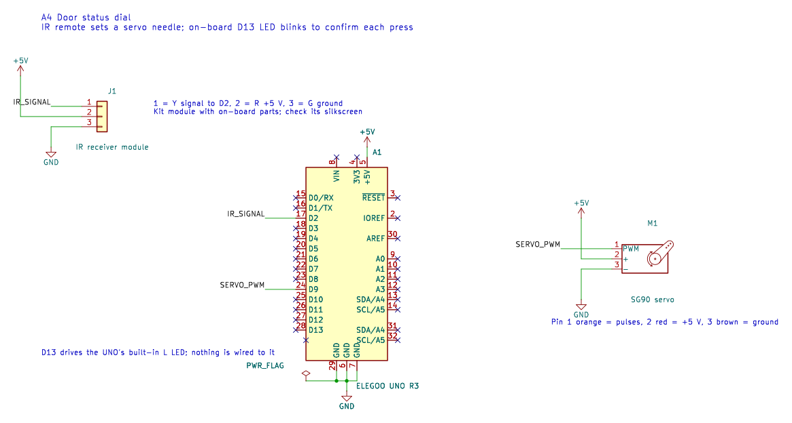
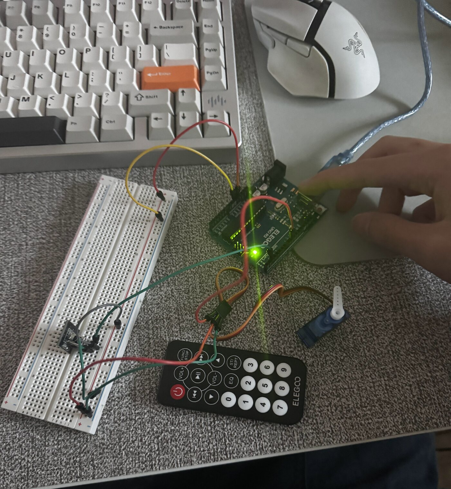
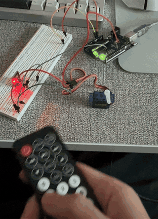
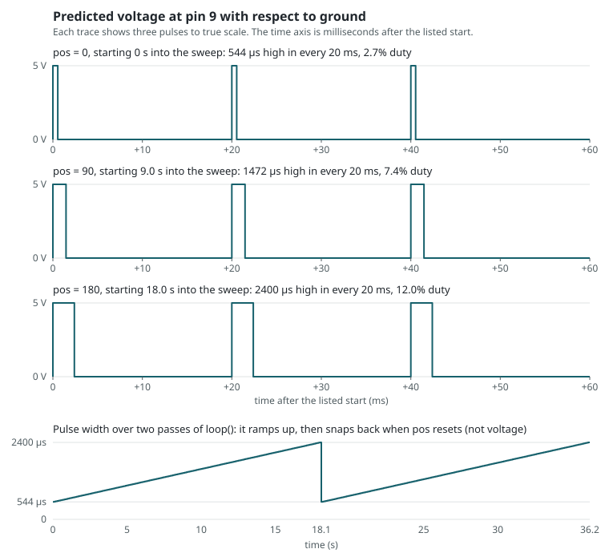

A closed door does not say whether I am busy, asleep, or glad to be interrupted. The Door Status Dial is a sign for the outside of a door, with a servo needle that points to one of four statuses, Come in, Knock first, Focusing, or Asleep, and I can change it from across the room with the kit's IR remote. The input is the IR receiver, using the IRremote library, and the outputs are the servo, using the Servo library, and the UNO's built-in LED. In this prototype the white servo horn is the needle, and the printed dial is not made yet. Nothing here calls analogRead(), so there is no sensor reading to calibrate.
Schematic

| Part | Lead or pin | Connects to | Why |
|---|---|---|---|
| IR receiver module | Y, signal | D2 (IR_PIN) | IRremote can read any digital pin, and D2 is not a PWM pin |
| IR receiver module | R and G | 5 V and GND | Module power |
| SG90 servo | Orange, signal | D9 (SERVO_PIN) | The Servo library disables PWM on D9 and D10 either way, so using D9 costs nothing |
| SG90 servo | Red and brown | 5 V and GND | Motor power, which a GPIO pin cannot supply |
| Built-in L LED | On the board | D13 (LED_PIN) | Confirms a press with nothing to wire |
Resistors and capacitor. There are no resistors to choose, because the built-in LED and the IR module already include theirs. I also left out the usual capacitor across the servo's supply to keep the build simple, which depends on the servo carrying only its horn. In my recording the needle does not jump back to its starting angle, which is what a board reset would look like.
Circuit

Firmware
Each pass through loop() checks for a press, moves the needle at most one degree, and turns the LED off when its time is up. There is no delay(), so presses register while the needle is moving.
// Compile in only the NEC decoder, the protocol the remote sends
#define DECODE_NEC
// IRremote library: turns the receiver's pulses into button codes
#include <IRremote.hpp>
// Servo library
#include <Servo.h>
// D2 reads the IR receiver module's signal pin (Y)
const int IR_PIN = 2;
// D13 drives the board's built-in L LED, which needs no wiring, to confirm each press
const int LED_PIN = 13;
// D9 sends control pulses to the servo's orange signal wire
const int SERVO_PIN = 9;
// The dial has four 45 degree wedges, and each angle below is the center of one wedge
// Wedge 1, 0 to 45 degrees: "Come in", a pulse of about 770 microseconds
const int ANGLE_COME_IN = 22;
// Wedge 2, 45 to 90 degrees: "Knock first", a pulse of about 1234 microseconds
const int ANGLE_KNOCK = 67;
// Wedge 3, 90 to 135 degrees: "Focusing", a pulse of about 1709 microseconds
const int ANGLE_FOCUSING = 113;
// Wedge 4, 135 to 180 degrees: "Asleep", a pulse of about 2173 microseconds
const int ANGLE_ASLEEP = 158;
// NEC command the kit remote sends for button 1 (check against the Serial Monitor)
const uint16_t BUTTON_1 = 0x0C;
// NEC command for button 2
const uint16_t BUTTON_2 = 0x18;
// NEC command for button 3
const uint16_t BUTTON_3 = 0x5E;
// NEC command for button 4
const uint16_t BUTTON_4 = 0x08;
// Move one degree every 20 ms, matching the servo's 20 ms pulse period, so each pulse is a new angle
const unsigned long STEP_MS = 20;
// Keep the LED on for 150 ms: long enough to see, short enough to be over before the next press
const unsigned long LED_ON_MS = 150;
// Servo object that controls the needle
Servo needle;
// The angle the needle was last told to hold, which starts on "Come in"
int currentAngle = ANGLE_COME_IN;
// The angle the needle is moving toward
int targetAngle = ANGLE_COME_IN;
// The time of the needle's last one degree step
unsigned long lastStepAt = 0;
// The time the LED was last turned on
unsigned long ledOnAt = 0;
// Remembers whether the LED is currently on
bool ledIsOn = false;
// Converts a button code to a dial angle, or returns -1 if that button has no status
int angleForButton(uint16_t command) {
// Choose the case that matches the button code
switch (command) {
// Button 1 selects "Come in"
case BUTTON_1: return ANGLE_COME_IN;
// Button 2 selects "Knock first"
case BUTTON_2: return ANGLE_KNOCK;
// Button 3 selects "Focusing"
case BUTTON_3: return ANGLE_FOCUSING;
// Button 4 selects "Asleep"
case BUTTON_4: return ANGLE_ASLEEP;
// Any other button is not a status
default: return -1;
}
}
// Runs once at power-up or reset
void setup() {
// Open the serial port at 9600 baud so the Serial Monitor can show each button code
Serial.begin(9600);
// Make the LED pin an output
pinMode(LED_PIN, OUTPUT);
// Set the starting angle first so the first pulse is not the library's default 90 degrees
needle.write(currentAngle);
// Start sending control pulses on D9
needle.attach(SERVO_PIN);
// Start listening on D2, with the library's own LED flashing off so D13 only confirms presses
IrReceiver.begin(IR_PIN, DISABLE_LED_FEEDBACK);
}
// Runs over and over after setup()
void loop() {
// Use one timestamp for every check in this pass through the loop
unsigned long now = millis();
// True when the receiver has finished decoding a transmission
if (IrReceiver.decode()) {
// Holding a button sends repeat frames, and those should not count as new presses
bool isRepeat = IrReceiver.decodedIRData.flags & IRDATA_FLAGS_IS_REPEAT;
// Copy out the button code
uint16_t command = IrReceiver.decodedIRData.command;
// Tell the receiver it can start listening for the next transmission
IrReceiver.resume();
// Look up the dial angle for this button
int newTarget = angleForButton(command);
// Log every fresh press, even of an unused button, so its code can be read
if (!isRepeat) {
// Label the button code in the log
Serial.print("button=0x");
// Print the code in hexadecimal to compare with the BUTTON constants
Serial.println(command, HEX);
}
// Only a fresh press of a status button changes anything
if (!isRepeat && newTarget >= 0) {
// Point the needle at the new status
targetAngle = newTarget;
// Light the LED, which confirms the press even if the needle is already there
digitalWrite(LED_PIN, HIGH);
// Remember when the LED came on
ledOnAt = now;
// Remember that the LED needs turning off later
ledIsOn = true;
}
}
// Step only if the needle is off target and a full 20 ms has passed
if (currentAngle != targetAngle && now - lastStepAt >= STEP_MS) {
// Restart the step timer
lastStepAt = now;
// Move one degree in whichever direction reaches the target
currentAngle += (targetAngle > currentAngle) ? 1 : -1;
// Send the new angle to the servo
needle.write(currentAngle);
}
// Turn the LED off once its 150 ms is over
if (ledIsOn && now - ledOnAt >= LED_ON_MS) {
// Set D13 low
digitalWrite(LED_PIN, LOW);
// Remember that the LED is off
ledIsOn = false;
}
}| Value in code | What it corresponds to | Why this value |
|---|---|---|
ANGLE_COME_IN = 22, ANGLE_KNOCK = 67, ANGLE_FOCUSING = 113, ANGLE_ASLEEP = 158 | Needle positions, sent as pulses of about 770, 1234, 1709, and 2173 µs | The centers of four equal 45° wedges, which also stay away from the ends of the servo's travel |
BUTTON_1 to BUTTON_4 = 0x0C, 0x18, 0x5E, 0x08 | The NEC command for each remote button | From the kit remote's code table, and only these codes move the needle, so the four positions in my recording show they match my remote |
STEP_MS = 20 | Time per degree of needle travel | Matches the library's 20 ms pulse period, so each pulse carries one new angle, and the longest move, 136°, takes about 2.7 s |
LED_ON_MS = 150 | Length of the LED blink | Long enough to see, and over before the next press |
Serial.begin(9600) | Speed of the USB serial log | Plenty for one short line per press |
Operation

Question 1: voltage at pin 9 during the sweep

Pin 9 is only ever at 0 V or 5 V, because myservo.write() sets how long each pulse stays high rather than setting a voltage. The library sends a pulse every 20 ms and maps 0° to 180° onto a width of 544 to 2400 µs, about 10.3 µs per degree. Each value of pos lasts 100 ms, or five pulses, so a sweep takes about 18.1 s, and then pos returns to 0 and the pulses drop back to 544 µs.
Question 2: an erroneous reading 1% of the time
A rare wrong reading is an outlier, so I would take the median, which ignores outliers instead of averaging them in:
// Take five readings in a row
for (i = 0; i < 5; i++) {
samples[i] = readSensor();
}
// Put them in order from lowest to highest
sort(samples);
// The middle value cannot be a lone outlier, since an outlier sorts to one end
reading = samples[2];If errors are independent, the median is only wrong when at least three of the five readings are bad, about 0.001% of the time.
Question 3: noise of 10% up or down
Here every reading is a little off, and noise that goes up as often as down cancels out, so I would average:
// Start the running total at zero
total = 0;
// Add up sixteen readings, spaced 5 ms apart
for (i = 0; i < 16; i++) {
total = total + readSensor();
wait(5 ms);
}
// Divide to get the average
reading = total / 16;Averaging 16 readings cuts random error by √16, from 10% to about 2.5%, at the cost of about 80 ms of lag.
References
- Arduino Servo library.
- IRremote library.
- ELEGOO kit tutorials, for the IR receiver and servo.
- UNO R3 pinout and per-pin current specification.
- KiCad, used for the schematic.